Family rates by condition
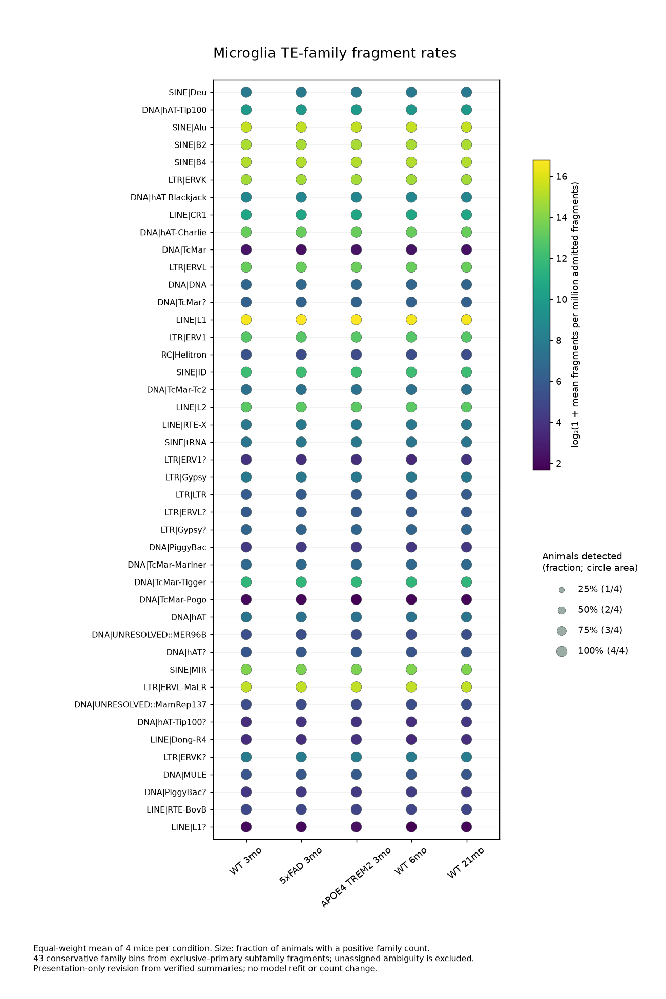
Color: log₂(1 + equal-weight mean mouse rate per million all admitted fragments). Circle area: fraction of four mice detected. Presentation-only revision from verified tables.
Open PDFMULTIASSAY EXPLORER / INITIAL RESULTS
Reviewed provisional RNA labels and Microglia programs, alongside initial ATAC embeddings, activity and verified peak–TE overlaps.
RNA + ATAC / ALL CELL TYPES AND MICROGLIA
Four saved embeddings are shown for each scope: our RNA, GEO RNA, our ATAC and GEO ATAC. Coordinates from different sources and assays are not spatially registered. Colors, dot sizes, X/Y display scales and cluster labels can be changed independently; these display controls do not refit clusters or change counts. Download each plot as PDF.
Our RNA panel uses the reviewed 22,251-cell provisional Microglia core; our ATAC panel uses 9,152 selected nuclei. New corrected-component clustering offers three selectable resolutions for each assay. GEO RNA uses the authors’ 16,879 Microglia cells and published subcluster coordinates; GEO ATAC has 9,511 nuclei with one broad Microglia label. Every new cluster has a short provisional “MG” label. The naming follows the Allen AIT21 Immune → Microglia hierarchy; fine Allen expression mapping, states and purity remain unvalidated. Allen whole-mouse taxonomy.
REPRESENTATIVE MARKERS / FOUR SCOPES
RNA expression and ATAC gene activity are separate measurements. Dot area shows the detection fraction; color shows the cluster mean scaled within each gene. All-cell panels use accepted mouse-balanced summaries. Microglia subtype panels require their own source-verified summaries.
Select a resolution and partition graph. Saved coordinate embeddings remain a separate view.
QC / 17 OCTOBER 2026
Libraries 195, 207, 259 and 295 remain outside the accepted candidate set. Acceptance is a candidate QC checkpoint, not final singlet certification or final cell annotation.
The immutable 15 October atlas snapshot and its eight-completed/queued report are historical. That initializer is disabled in this new index. The ATAC embeddings below retain their original preview cell set; they have not been replaced by final QC-retained embeddings.
Archived 15 October QC report ↗01 / SPATIAL EXPLORER
Both saved embeddings use the same initial nuclei and LSI features. The uncorrected view is an independent comparator; Harmony corrects PCR technical effects. Changing the partition selects actual saved cluster labels; changing this coordinate embedding only changes where the same nuclei are drawn. Neither control reruns clustering.
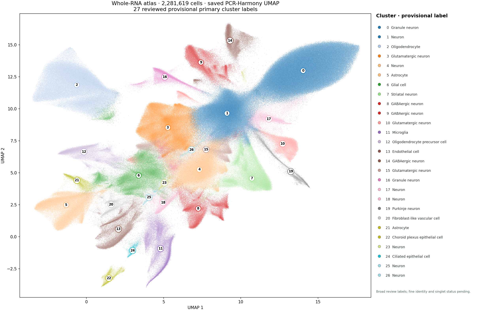
UMAP 1UMAP 2Layout controls and RNA overlay are visual only. RNA and ATAC embeddings were fitted separately. Overlay alignment is arbitrary and cannot establish matching cells, clusters, distances, or biological overlap.
PDFs include their original full-atlas views and do not change with these filters.
Cell-level gene/TE color overlays require an additional feature adapter and are not available in this preview.
CROSS-ASSAY PROFILE COMPARISON · 22 OCT 2026
Native ATAC gene-body and RNA gene-count profiles were matched through 55,364 one-to-one shared genes using mouse-held-out profile comparisons. This connects cluster summaries across assays; UMAP coordinates remain separate. Percentages are held-out-mouse best-match votes, not cell-pairing, transfer accuracy, or confidence probabilities. All assignments remain provisional; weak or conflicting groups are retained.
| ATAC cluster | RNA cluster | Coarse provisional match | Eligible mice | Vote | Profile support |
|---|---|---|---|---|---|
| 0 | 4 | Neuron | 20 | 100% | supported_coarse_profile_correspondence |
| 1 | 0 | Granule neuron | 20 | 100% | supported_coarse_profile_correspondence |
| 2 | 3 | Glutamatergic neuron | 20 | 100% | supported_coarse_profile_correspondence |
| 3 | 2 | Oligodendrocyte | 20 | 100% | supported_coarse_profile_correspondence |
| 4 | 5 | Astrocyte | 20 | 100% | supported_coarse_profile_correspondence |
| 5 | 7 | Striatal neuron | 20 | 100% | supported_coarse_profile_correspondence |
| 6 | 11 | Microglia | 20 | 100% | supported_coarse_profile_correspondence |
| 7 | 0 | Granule neuron | 20 | 100% | supported_coarse_profile_correspondence |
| 8 | 4 | Neuron | 20 | 90% | supported_coarse_profile_correspondence |
| 9 | 24 | Ciliated epithelial cell | 20 | 100% | supported_coarse_profile_correspondence |
| 10 | 4 | Neuron | 20 | 60% | low_or_unavailable_profile_support |
Job 7529944 completed 0:0. Small output-table checks reproduced 757 held-out rows and all 38 votes across 20 mice. No per-cell joint embedding or biological validation was produced. Full ATAC and RNA labels remain independently editable display fields.
02 / MARKER EXPLORER
Gene-body activity describes accessibility, not RNA expression. Every animal contributes equally to each displayed group. Dot area is the mean animal fraction of nuclei with nonzero activity.
Z-scores use the population SD across the currently displayed groups and are clipped to ±2.5 only for color. A single group has z-score 0. Gray × means the gene is unmapped (NA), not absent. Ranking is limited to the 107-gene candidate panel and is descriptive, not differential marker discovery or a p-value.
03 / BIOLOGICAL REPLICATES
One point per animal. Boxes show median, quartiles, and full observed range. No significance tests are applied.
Uses the same raw or normalized statistic selected for the dotplot. Z-score mode uses normalized animal means here so units remain interpretable.
04 / COMPOSITION
Selected clusters as a percentage of all initial nuclei in each condition, after the animal, sex, and genotype filters. Selecting fewer clusters can sum to less than 100%.
Composition is descriptive. Disease contrasts require the prespecified age-matched animal-level model; older WT animals are not pooled as disease controls.
New: accepted 9,152-cell TE-family analysis and true TE-feature UMAP. The deposited peak-matrix analysis below retains its separate historical 9,511-cell selection.
PUBLISHED MICROGLIA / ATAC ACCESSIBLE REGIONS
Source: GEO GSM6538357 published ATAC matrix and published Microglia labels, with 9,511 cells across all 20 mice. These cells are a separate published selection from the provisional RNA Microglia selection.
Published mm39 peaks were mapped conservatively to mm10: 339,735 of 339,951 passed reciprocal conversion; 216 excluded mappings are unavailable, not zero accessibility. Any blacklist overlap excludes the entire feature from these summaries. The primary threshold is at least max(3, ceil(1% of that mouse's published Microglia cells)) positive cells in each qualifying mouse, with at least two qualifying mice per primary peak.
Each fraction uses its own callable peak-feature denominator. A peak may overlap multiple TE classes; class fractions need not sum to 100%. The all-published comparison is descriptive and includes Microglia peaks.
| TE class | Microglia TE-overlapping peaks | Microglia fraction | All published callable fraction |
|---|---|---|---|
| DNA | 3,400 | 5.40% | 5.65% |
| LINE | 7,870 | 12.50% | 14.59% |
| SINE | 24,251 | 38.52% | 28.69% |
| LTR | 10,110 | 16.06% | 16.95% |
| RC | 7 | 0.01% | 0.01% |
| Retroposon | 0 | 0.00% | 0.00% |
Open or download the reviewed report PDF ↗
One row per mouse, using that mouse's cell threshold. Fractions describe accessible regions, not read abundance or a genotype comparison.
| Mouse | Published Microglia cells | Positive-cell threshold | Accessible peaks | TE-overlapping peaks | TE fraction |
|---|---|---|---|---|---|
| 5xFAD_3mo_female_1 | 558 | 6 | 38,267 | 21,545 | 56.30% |
| 5xFAD_3mo_female_2 | 504 | 6 | 30,329 | 16,997 | 56.04% |
| 5xFAD_3mo_male_1 | 317 | 4 | 31,750 | 17,822 | 56.13% |
| 5xFAD_3mo_male_2 | 543 | 6 | 30,157 | 16,952 | 56.21% |
| APOE4_TREM2_3mo_female_1 | 486 | 5 | 39,258 | 22,218 | 56.59% |
| APOE4_TREM2_3mo_female_2 | 445 | 5 | 31,287 | 17,445 | 55.76% |
| APOE4_TREM2_3mo_male_1 | 515 | 6 | 36,289 | 20,445 | 56.34% |
| APOE4_TREM2_3mo_male_2 | 361 | 4 | 33,709 | 18,874 | 55.99% |
| WT_21mo_female_1 | 486 | 5 | 40,181 | 22,626 | 56.31% |
| WT_21mo_female_2 | 577 | 6 | 47,076 | 26,484 | 56.26% |
| WT_21mo_male_1 | 540 | 6 | 33,050 | 18,474 | 55.90% |
| WT_21mo_male_2 | 468 | 5 | 41,481 | 23,356 | 56.31% |
| WT_3mo_female_1 | 391 | 4 | 35,478 | 19,896 | 56.08% |
| WT_3mo_female_2 | 570 | 6 | 42,674 | 24,168 | 56.63% |
| WT_3mo_male_1 | 410 | 5 | 31,193 | 17,612 | 56.46% |
| WT_3mo_male_2 | 574 | 6 | 34,858 | 19,730 | 56.60% |
| WT_6mo_female_1 | 287 | 3 | 45,154 | 25,553 | 56.59% |
| WT_6mo_female_2 | 565 | 6 | 40,459 | 22,814 | 56.39% |
| WT_6mo_male_1 | 559 | 6 | 38,763 | 21,858 | 56.39% |
| WT_6mo_male_2 | 355 | 4 | 41,916 | 23,597 | 56.30% |
The comparison is conditional on this matched subset: 53,607 Microglia-query peaks and 53,607 disjoint control peaks, selected without TE annotation using chromosome, gene context, length, GC, mappability, TSS distance and other-cell prevalence. This represents 85.16% of complete-covariate query peaks; it does not represent every Microglia peak.
Rows are ranked by absolute log2 paired OR only. The continuity-corrected paired OR uses discordant matched pairs. FDR, when admitted, covers all tested any-TE, class, family and subfamily features together. The tables show effect directions; a row is not automatically a significant enrichment.
| Subfamily | Class / family | Microglia-query TE peaks | Control TE peaks | Paired OR | BH FDR |
|---|---|---|---|---|---|
| IAPLTR3-int | LTR / ERVK | 6 | 0 | 13 | Not tested |
| RMER16_Mm | LTR / ERVK | 23 | 2 | 9.4 | Not tested |
| RLTR10-int | LTR / ERVK | 4 | 0 | 9 | Not tested |
| RLTR12F | LTR / ERVK | 4 | 0 | 9 | Not tested |
| RMER16C | LTR / ERVK | 4 | 0 | 9 | Not tested |
| HAL1_SS | LINE / L1 | 3 | 0 | 7 | Not tested |
| HERVL40-int | LTR / ERVL | 3 | 0 | 7 | Not tested |
| IAPLTR4 | LTR / ERVK | 3 | 0 | 7 | Not tested |
| LTR33C | LTR / ERVL | 10 | 1 | 7 | Not tested |
| MER52-int | LTR / ERV1 | 3 | 0 | 7 | Not tested |
| MER54B | LTR / ERVL | 3 | 0 | 7 | Not tested |
| MER88 | LTR / ERVL | 3 | 0 | 7 | Not tested |
| RLTR19A | LTR / ERVK | 3 | 0 | 7 | Not tested |
| RLTR6B_Mm | LTR / ERV1 | 3 | 0 | 7 | Not tested |
| Ricksha | DNA / MuDR | 3 | 0 | 7 | Not tested |
| MER90 | LTR / ERV1 | 8 | 1 | 5.67 | Not tested |
| RLTR35B_MM | LTR / ERVL | 13 | 2 | 5.4 | Not tested |
| ERVB3_1-I_MM-int | LTR / ERVK | 2 | 0 | 5 | Not tested |
| ERVB3_1-LTR_MM | LTR / ERVK | 2 | 0 | 5 | Not tested |
| ERVB4_1-I_MM-int | LTR / ERVK | 2 | 0 | 5 | Not tested |
| Subfamily | Class / family | Microglia-query TE peaks | Control TE peaks | Paired OR | BH FDR |
|---|---|---|---|---|---|
| MamRep4096 | DNA / hAT? | 0 | 9 | 0.0526 | Not tested |
| LTRIS_Mm | LTR / ERV1 | 0 | 5 | 0.0909 | Not tested |
| MLTR31FA_MM | LTR / ERVK | 0 | 5 | 0.0909 | Not tested |
| RLTR13D6 | LTR / ERVK | 0 | 5 | 0.0909 | Not tested |
| MER70A | LTR / ERVL | 0 | 4 | 0.111 | Not tested |
| RLTR1D | LTR / ERV1 | 0 | 4 | 0.111 | Not tested |
| RMER16A2 | LTR / ERVK | 0 | 4 | 0.111 | Not tested |
| Eulor1 | DNA / DNA | 0 | 3 | 0.143 | Not tested |
| L1M6B | LINE / L1 | 0 | 3 | 0.143 | Not tested |
| LTR106_Mam | LTR / LTR | 0 | 3 | 0.143 | Not tested |
| LTR52-int | LTR / ERVL | 0 | 3 | 0.143 | Not tested |
| LTR86C | LTR / ERVL | 0 | 3 | 0.143 | Not tested |
| LTR90B | LTR / LTR | 0 | 3 | 0.143 | Not tested |
| MER110 | LTR / ERV1 | 0 | 3 | 0.143 | Not tested |
| RLTR13B4 | LTR / ERVK | 0 | 3 | 0.143 | Not tested |
| RLTR1D2_MM | LTR / ERV1 | 0 | 3 | 0.143 | Not tested |
| RLTR41 | LTR / ERV1 | 1 | 10 | 0.143 | Not tested |
| RLTR9C | LTR / ERVK | 0 | 3 | 0.143 | Not tested |
| L1Md_F | LINE / L1 | 1 | 9 | 0.158 | Not tested |
| Charlie17a | DNA / hAT-Charlie | 0 | 2 | 0.2 | Not tested |
Loading verified TE overlap controls…
06 / DISPLAY LAYER
Rename clusters for a presentation, or give multiple clusters the same display label to combine their plotted summaries. Merged activity means are weighted by nucleus count within each animal before animals receive equal weight. These edits are local display preferences, never final annotations.
| Initial cluster | Initial nuclei | Manual diagnostic candidate | Your display label |
|---|
07 / EVIDENCE & NEXT ADAPTERS
The status adapter below belongs to the preserved 15 October ATAC preview. Current reviewed RNA/Microglia results are in the 17 October RNA section; Microglia RNA TE QC and mouse-level differential results reviewed; whole-atlas RNA TE remains pending. Final SCT layers remain pending.
MICROGLIA / TE-ASSOCIATED ACCESSIBILITY /21 OCTOBER 2026
Separate views of direct TE fragment rates, TE-associated regulatory loci and TE-feature cell embeddings. Accepted family and cell-embedding results are shown below; the older baseline remains separately labeled.
Raw exclusive-primary subfamily counts are conservatively summed into 43 family bins. DESeq2 uses all admitted fragments as fixed exposure, 20 independent mice and sex + condition. The fixed count filter is ≥10 in ≥4 mice; DNA|TcMar-Pogo and LINE|L1? were ineligible. No peak gate, within-family ambiguity recovery or multimapper recovery is used.

Color: log₂(1 + equal-weight mean mouse rate per million all admitted fragments). Circle area: fraction of four mice detected. Presentation-only revision from verified tables.
Open PDF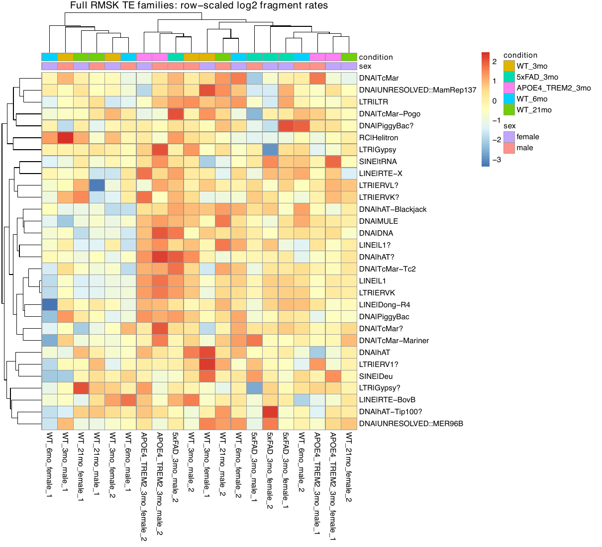
Display transformation only; animals remain independent replicates.
Open PDF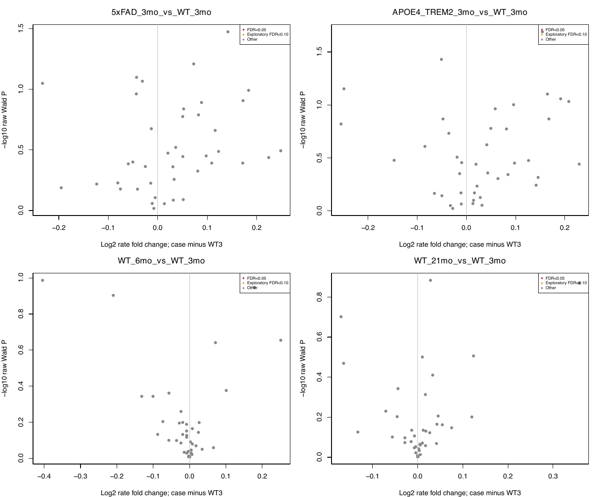
All four contrasts have zero discoveries at primary q<0.05 and exploratory q<0.10.
Open PDFVerified actual coordinates for all 9,152 cells are available.
Scroll to zoom · drag to pan · double-click to reset. Color scales stay fixed across the complete cell population when filters change. Family colors show log1p(exclusive-primary family fragments per million admitted fragments); gray/NA is not a zero measurement.
Download all 9,152 coordinates TSV · Coordinates and all 43 family overlays JSON
335,546 common nonoverlapping regions; same 9,152 cells and 20 mice. Raw integer pseudobulks; sex + condition DESeq2 with fixed ≥10 counts in ≥4 mice eligibility and median-ratio normalization. Primary q<0.05 and exploratory q<0.10 are independently filtered per contrast; public lists preserve the exact union and both flags.
| Contrast | Threshold | All DA regions | Higher | Lower | TE-overlapping DA regions |
|---|---|---|---|---|---|
| 5xFAD_3mo_vs_WT_3mo | q05 | 2 | 2 | 0 | 2 |
| 5xFAD_3mo_vs_WT_3mo | q10_EXPLORATORY | 2 | 2 | 0 | 2 |
| APOE4_TREM2_3mo_vs_WT_3mo | q05 | 1 | 1 | 0 | 1 |
| APOE4_TREM2_3mo_vs_WT_3mo | q10_EXPLORATORY | 1 | 1 | 0 | 1 |
| WT_6mo_vs_WT_3mo | q05 | 0 | 0 | 0 | 0 |
| WT_6mo_vs_WT_3mo | q10_EXPLORATORY | 0 | 0 | 0 | 0 |
| WT_21mo_vs_WT_3mo | q05 | 1 | 1 | 0 | 0 |
| WT_21mo_vs_WT_3mo | q10_EXPLORATORY | 2 | 2 | 0 | 0 |
Three primary TE-associated regions are observed: the two 5xFAD chr9 candidates above and APOE4_TREM2 region UNION0167018 (chr19:36,925,324–36,927,081, BED0; q=0.02773; overlapping ID_B1/PB1D10). WT6 has no discoveries; the WT21 primary and additional exploratory regions have no retained TE overlap.
Only part of each discovered region overlaps retained TEs: 19.0% for UNION0319992, 4.3% for UNION0319993 and 6.7% for UNION0167018. Peak-level count changes therefore are not TE-specific measurements.
TE overlap is descriptive coordinate association. Mappability is not measured; overlap ratios are not formal enrichment significance. No retained TE overlap does not mean gene-only, and TE overlap does not establish autonomous TE activity or RNA expression.
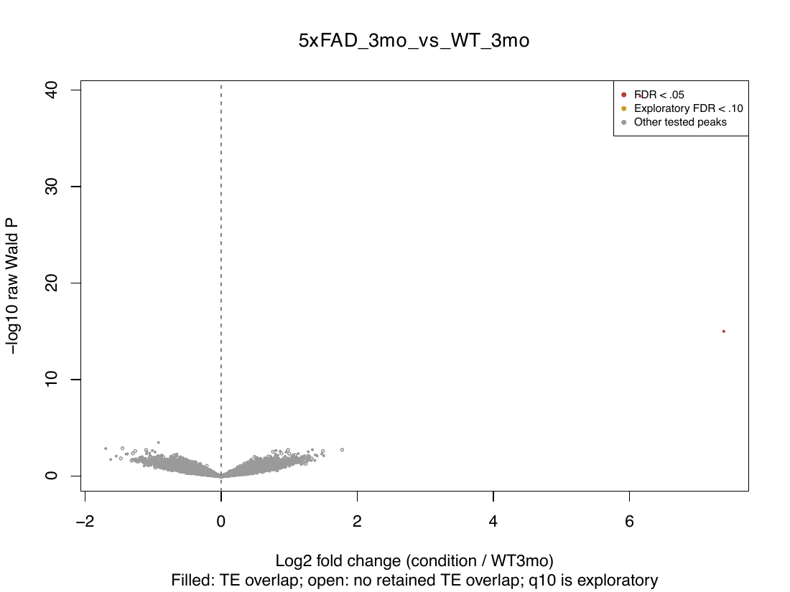
Open PDF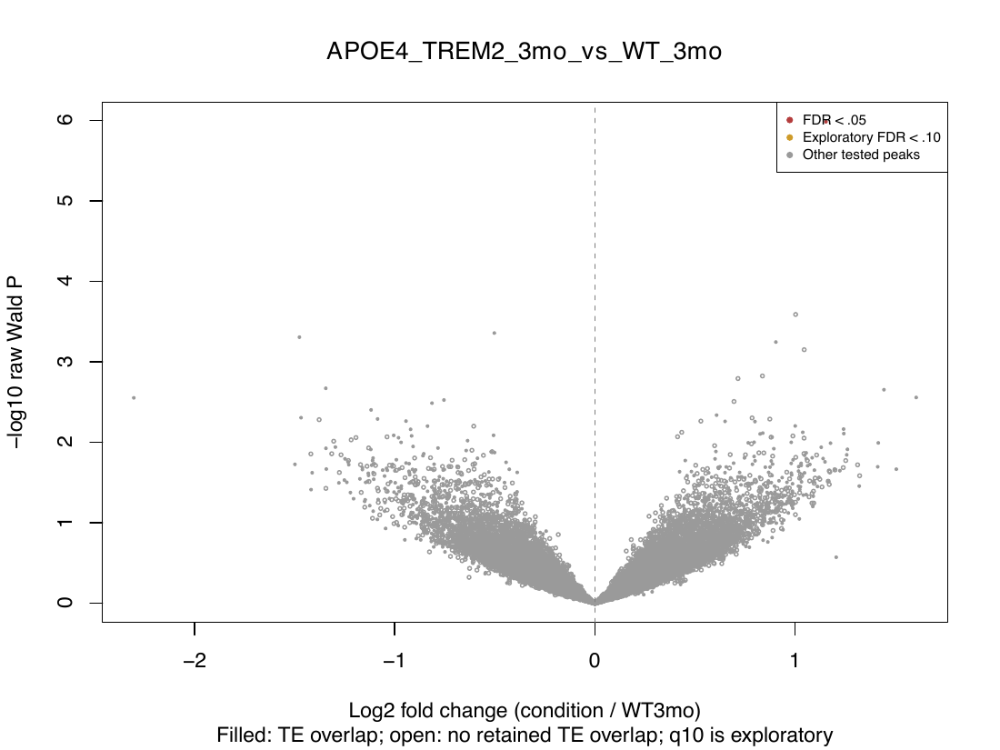
Open PDF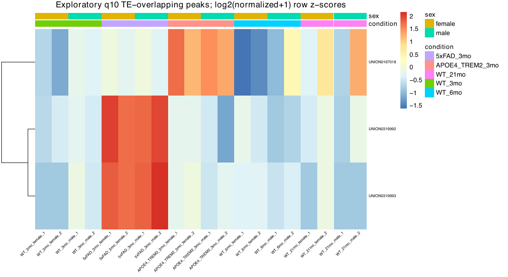
Open PDF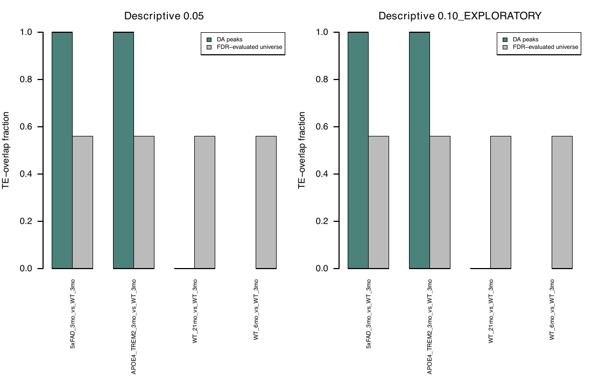
Open PDF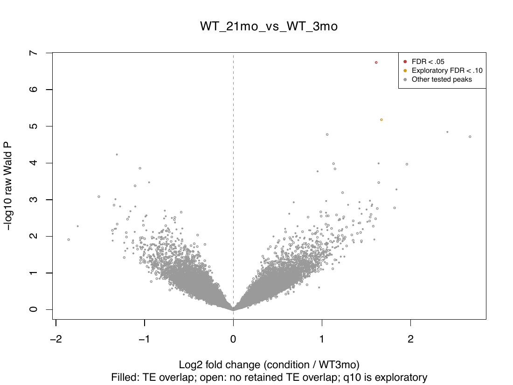
Open PDF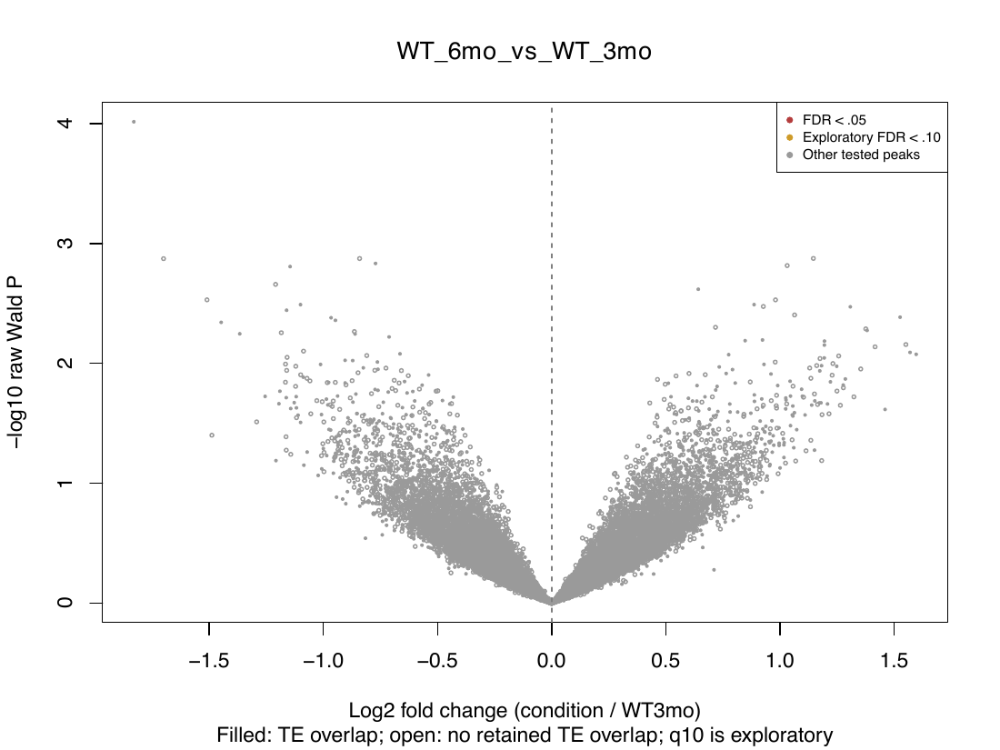
Open PDFFull-mm10 annotation, with fragments assigned to exactly one distinct TE subfamily. Primary family bins sum those exclusive counts. No family or subfamily passes BH q<0.05 in the four planned contrasts. This does not establish biological equivalence or rule out locus-specific changes.
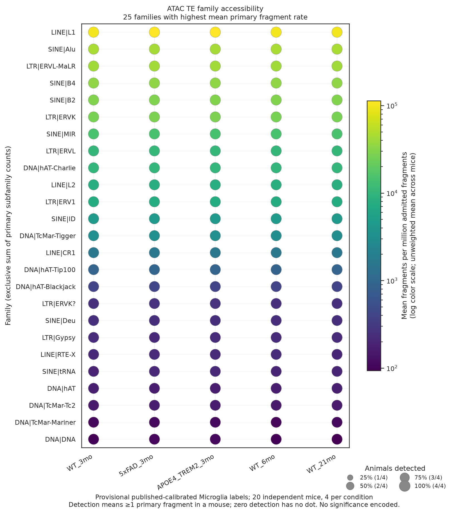
Color shows equal-weight mean mouse rate; size is the fraction of four animals detected.
Open figure PDF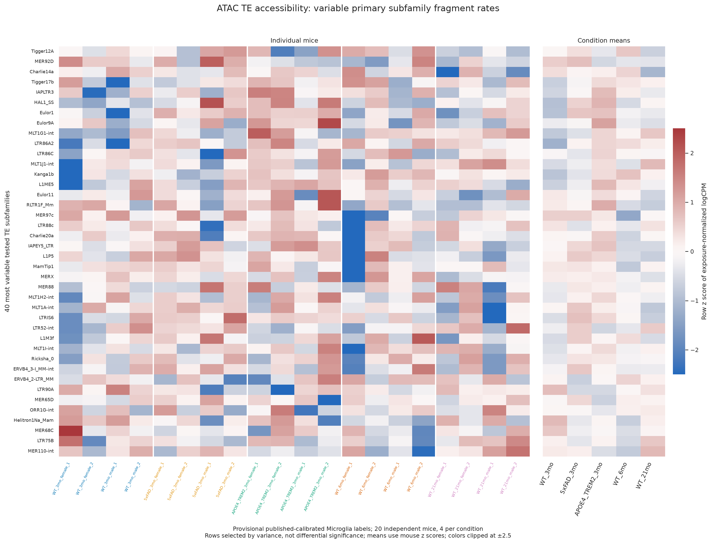
40 most variable tested subfamilies; row z-scores are display transformations.
Open figure PDF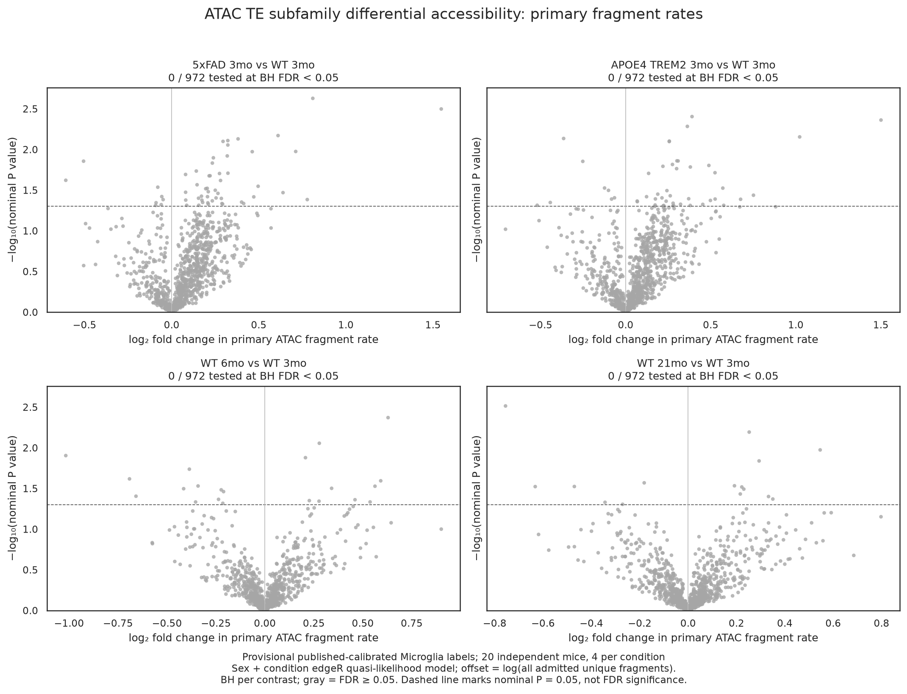
This existing plot uses q<0.05. The nominal-P reference line is not an FDR cutoff.
Open figure PDFATAC accessibility, not TE RNA expression. Counts use uniquely aligned MAPQ≥30, NH=1, blacklist-filtered, unshifted deduplicated fragments. Multi-subfamily overlap assignments stay separate; discarded multimappers are not recovered. The primary baseline compares rates per all admitted fragments with sex-adjusted mouse-level edgeR models. Disease and WT aging contrasts remain separate.
The published deposited-matrix Microglia peak summary uses 9,511 cells. It is a separate historical selection and is not pooled with this 9,152-cell fragment analysis. The original whole-atlas peak UMAP is also a separate endpoint. Provisional labels are not final singlet or retention certification.
Animal depth and TE fractions PDF · Cell QC PDF · Mouse PCA/correlation PDF
20 ANIMALS · USER-CALLED PEAKS · MM10
This update uses the supplied global.manual.atac-peaks.with_group.bed and TEs.sorted.bed, with full peak intervals and exact TE loci. The peak file contains 370,514 rows but 355,621 distinct peaks: 14,893 WT_3mo male R1 rows are verified duplicate copies with a malformed name and group column. Forty valid chrM peaks remain in the denominator. Four animal BAMs contribute to each group.
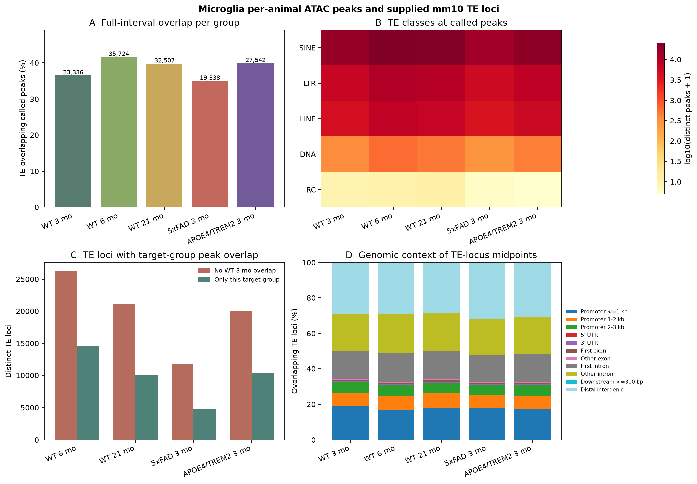
| Group | Distinct called peaks | TE-overlapping peaks | Overlapping TE loci | TE loci with no WT_3mo peak / unique to target |
|---|---|---|---|---|
| WT_3mo | 63,900 | 23,336 (36.5%) | 28,408 | control |
| WT_6mo | 85,832 | 35,724 (41.6%) | 44,334 | 26,266 / 14,639 |
| WT_21mo | 81,666 | 32,507 (39.8%) | 38,393 | 21,038 / 9,972 |
| 5xFAD_3mo | 55,207 | 19,338 (35.0%) | 25,060 | 11,821 / 4,785 |
| APOE4_TREM2_3mo | 69,016 | 27,542 (39.9%) | 36,216 | 20,027 / 10,353 |
Figure PDF · Group table · Target-only TE counts · All separate BEDs and tables (ZIP) · Methods
“Absent in control” means no overlapping called peak from any WT_3mo animal; it does not establish zero accessibility or a statistically differential TE locus. TE class/name counts are nonexclusive, and these coordinate overlaps are not TE RNA expression. The earlier pooled group-peak and GEO plots below use different source peaks and are kept as historical comparisons.
RNA TE · 20 MICE · FIVE CONDITIONS
The same 785 eligible IRescue TE subfamilies are shown across all five groups. Values come from the reviewed mouse-level TMM-normalized logCPM matrix of expected multimapping allocations. Four mice contribute to each group.
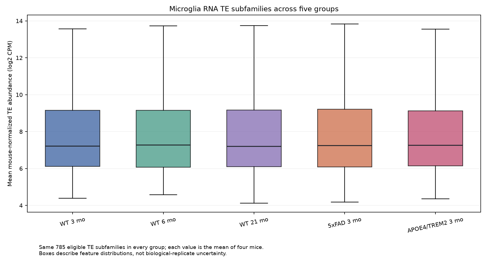
Five-group subfamily distributions (PDF) · Group means (TSV)
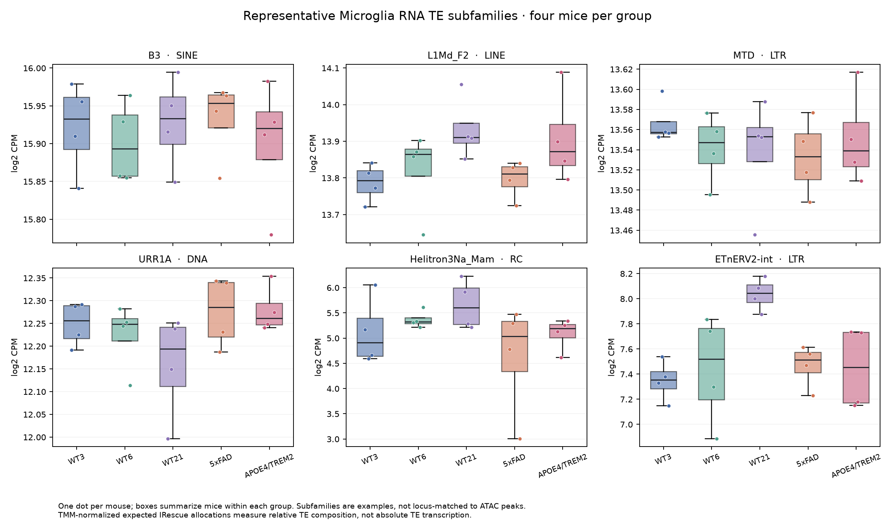
Representative subfamilies with mouse points (PDF) · All 785 subfamilies by mouse (TSV)
The first boxes describe distributions across subfamilies, not uncertainty across independent animals; the second figure shows four individual mice per group. TMM normalization here describes relative TE composition, not absolute TE transcription. IRescue provides subfamily-level allocations, so these RNA values cannot measure expression at the 14,639 ATAC-selected TE loci or establish locus-matched RNA–ATAC effects.
20 ANIMALS · TARGET PEAKS · REPEATMASKER TE LOCI
For each target group, the boxplots use the same TE loci in all five groups: a target-group ATAC peak overlaps the TE, and no WT_3mo animal has an overlapping called peak. The additional 14,639-TE panel is the set with a WT_6mo peak and no peak in any other group. WT_3mo coverage is measured on that exact set as the control.
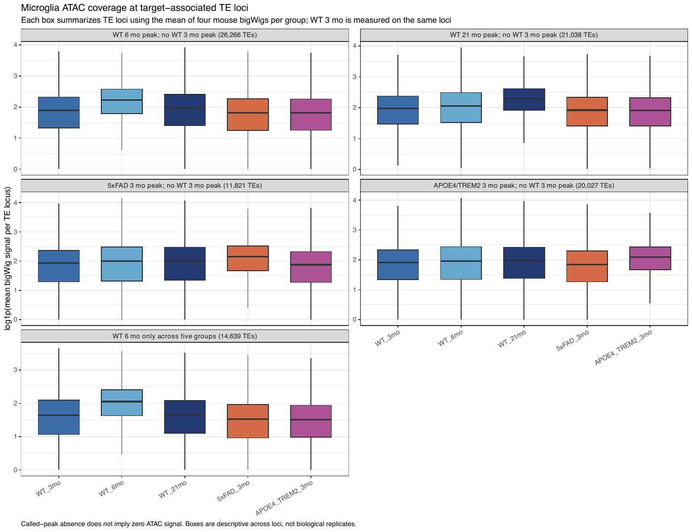
TE-locus boxplots (PDF) · Mouse-level boxplots (PDF) · Per-locus coverage and mouse summaries (ZIP)
Four mice per group. The first figure describes TE-locus distributions of the four-mouse mean bigWig signal; the second shows each mouse separately. A missing called peak can still have nonzero coverage. These plots do not claim differential accessibility or use TE loci as biological replicates. The input bigWig normalization remains as stored in the provided tracks.
ATAC PEAKS · CANONICAL MM10 REPEATMASKER
Each group contains four mice. Our values use pooled group-called peak summits; the published values are means of four mouse-level fractions using full peak intervals from the GEO Microglia matrix. The units and peak definitions differ, so compare group patterns within each panel rather than ranking the two percentages against each other.
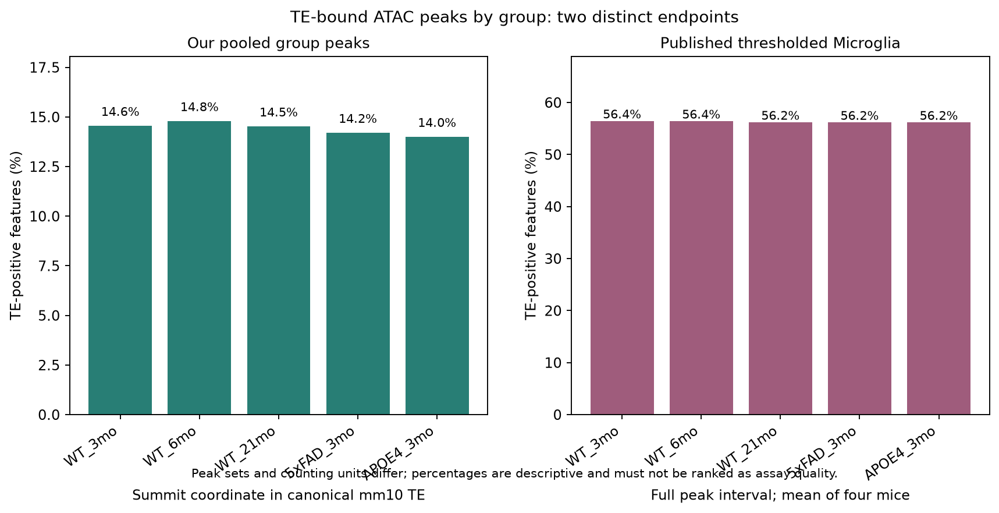
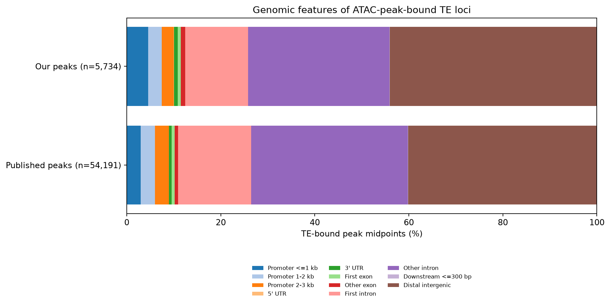
Reviewed all-cell-type peak catalogs, not Microglia-only peaks. Exclusive gene context is assigned at each TE-positive peak midpoint. PDF · Feature fractions (TSV)
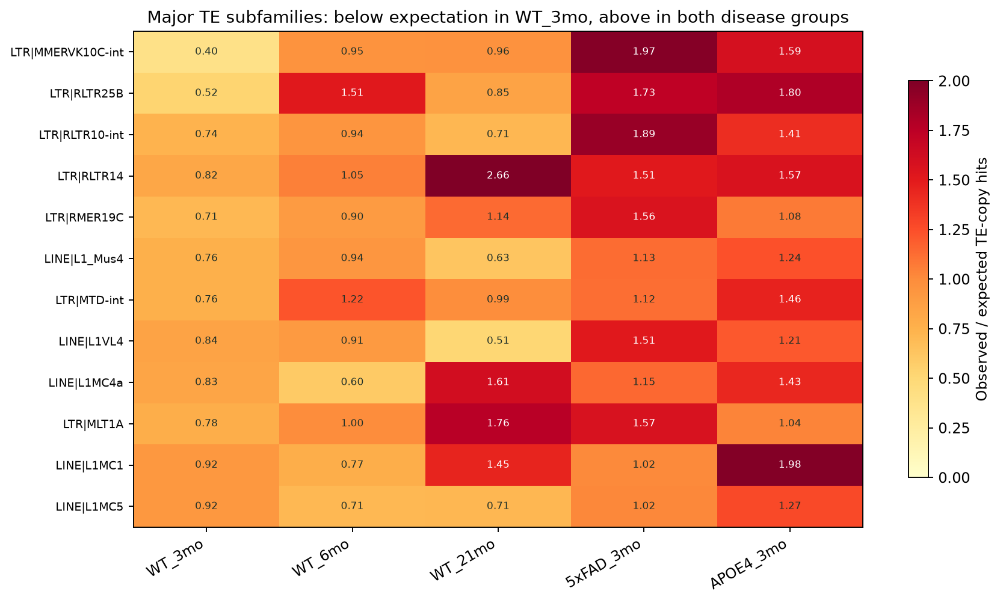
12 of 233 major subfamilies (>2,000 annotated copies) satisfy WT_3mo observed/expected <1 and both 5xFAD_3mo and APOE4_3mo >1. All five groups appear in the heatmap. PDF · Full values (TSV)
These are descriptive coordinate associations. Pooled peaks are not four independent differential tests; TE-copy backgrounds are not matched for mappability or GC. The plots do not show TE RNA expression or causal regulation. Methods and source limits.
GLOBAL PEAK SETS / FIGURE 2 COMPARISON / 21 OCTOBER 2026
Complete native and published mm10 peak universes, shown with their own denominators. These panels describe global genomic coordinates; they are separate from the Microglia-only fragment analysis above.
Paired DESeq2 is running; motif results will follow.
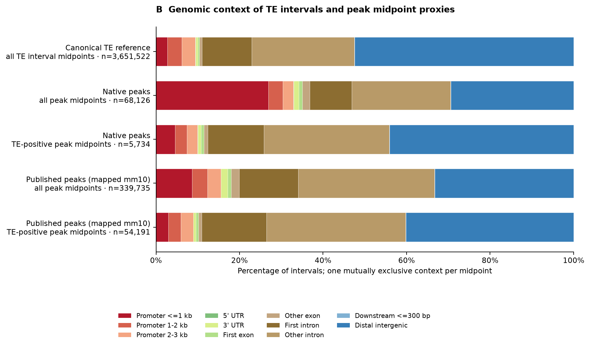
Peak and TE-reference lower midpoint proxies are assigned to transcript-aware genomic contexts. TSS ±3 kb and downstream 300 bp follow the documented ChIPseeker policy. These positions are not experimentally inferred summits.
Open full PDF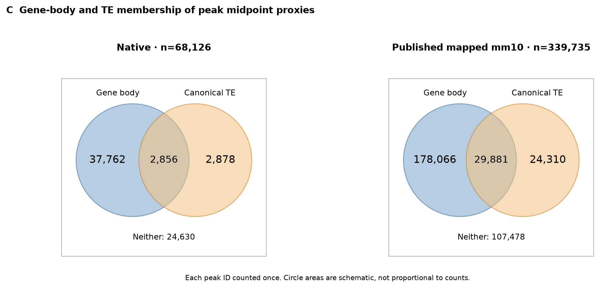
The same peak IDs form gene-body and canonical-TE overlap sets, with neither retained. The Venn is schematic and is not proportional by area. A midpoint annotation describes that base, rather than the entire peak.
Open full PDF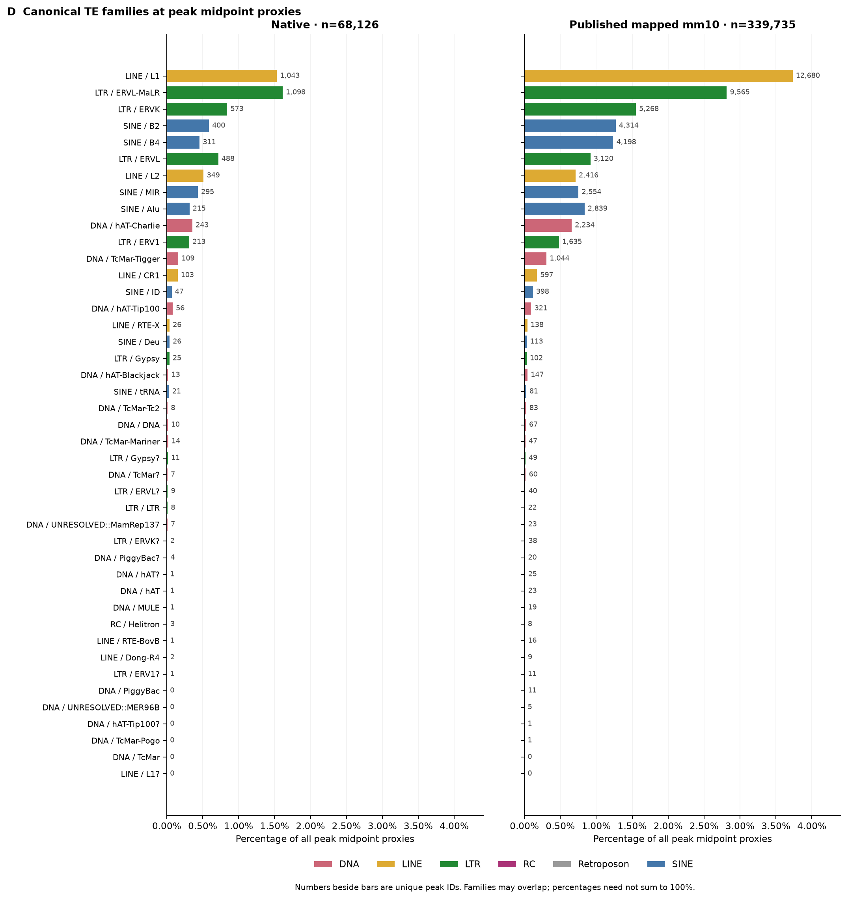
Each peak ID is counted once per class|family at its lower midpoint proxy. Different families can overlap, so family fractions are nonexclusive. Canonical TE bars exclude simple and low-complexity repeats and satellites.
Open full PDF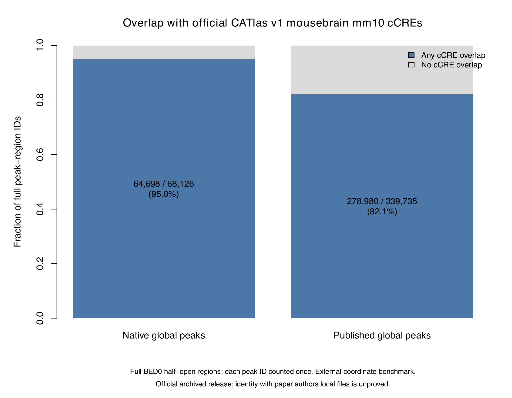
Full peak intervals overlap 64,698 / 68,126 native peaks (95.0%) and 278,980 / 339,735 published peaks (82.1%) with the official CATlas v1 mm10 cCRE archive (160 catalogs). There are 491,818 distinct canonical coordinate intervals. Identity to the paper authors’ local folder is unproved. This is descriptive coordinate overlap, not an annotation-accuracy or quality ranking.
Open full PDF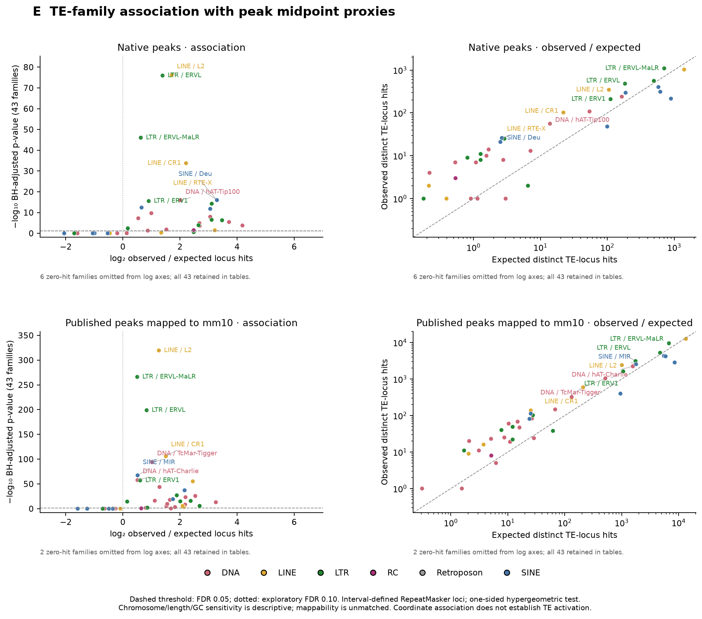
Distinct TE-locus hits by lower peak midpoint proxies are compared with the complete canonical TE-locus background. BH spans 43 families separately per peak set; subfamilies have a separate 1,075-test secondary scope. Counts and FDR values are available in tables for all 43 families. Zero-hit log-axis omissions and labeled examples are display choices.
Open full PDFReviewed B–E results; panel A pending. Published calibration labels are provisional.
MICROGLIA ATAC / PEAK-SUMMIT TE OVERLAP / 22 OCTOBER 2026
Canonical mm10 RepeatMasker loci were intersected with each group peak summit. The subfamily selector includes only repNames with more than 2,000 annotated copies: 233 subfamilies. These are pooled group peak trends, not mouse-level differential accessibility or TE expression.
Loading reviewed group trend data…
The difference is each comparison group minus WT_3mo. The repeated WT_21mo comparison in the request is shown once.
| Comparison | Group observed/expected | Difference from WT_3mo |
|---|
Download PDF heatmap · All five group values (TSV) · Four comparisons (TSV) · Methods and limitations
The observed/expected background is all eligible canonical TE copies. It is not matched for mappability, GC content or locus dependence; the tests are descriptive and no FDR or animal replicate inference is claimed here. Group peak widths, quality and sensitivity can differ. Source peak and bigWig files remain on LiSC under te-atac.
MICROGLIA ATAC / 20 MICE / 23 OCTOBER 2026
The accepted common mm10 peak matrix was tested by MAnorm2 with four mice per group. Of 335,546 common regions, 26,590 met the count filter; 14,896 tested regions overlap a canonical RepeatMasker TE. Mouse sex was balanced but is not modeled here. The sex-adjusted DESeq2 analysis remains the primary peak comparison.
| Group versus WT_3mo | TE-overlap peaks q < .05 | Exploratory q < .10 |
|---|---|---|
| WT_6mo | 0 | 0 |
| WT_21mo | 4 | 8 |
| 5xFAD_3mo | 2 | 2 |
| APOE4_TREM2_3mo | 1 | 1 |
FDR is adjusted across all 26,590 eligible regions in each comparison. MAnorm2 used count-positive occupancy as a proxy for independently called per-mouse peak occupancy. The two 5xFAD peaks are in prior Thy1-region candidate windows; construct-related confounding remains possible. The WT_21mo hits were absent from the prior DESeq2 TE-overlap hit list, so this disagreement is a method-sensitivity result.
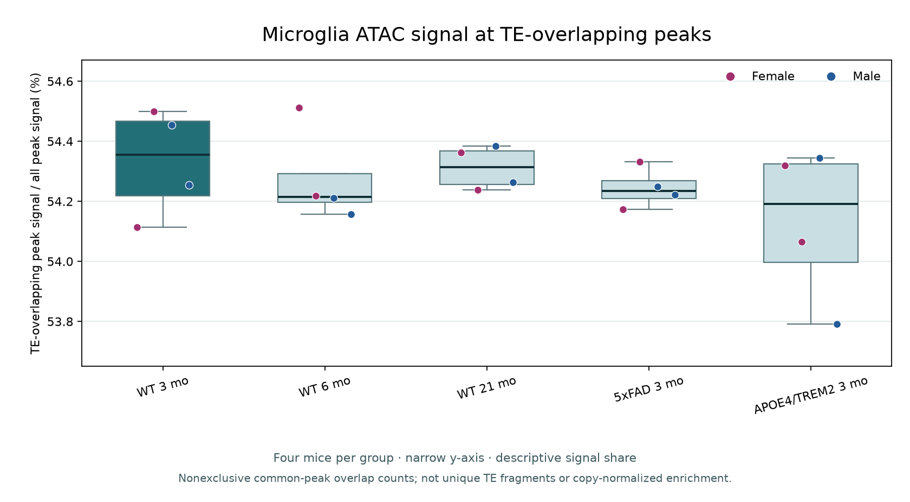
Boxplot PDF · Full peak lists and mouse table ZIP · Methods and interpretation
MICROGLIA / RNA TE QUALITY CONTROL / 21 OCTOBER 2026
The recovered RNA TE merge and descriptive QC are completed and independently reviewed. All selected cells remain in view. Figure 1 shows the actual cohort, saved gene RNA coordinates, a new TE RNA layout, QC distributions and mouse-level TE family composition.
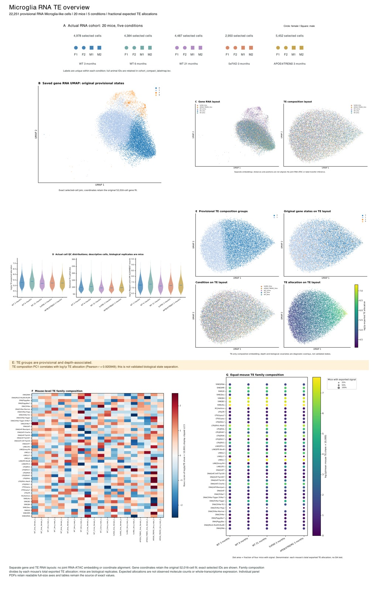
All 22,251 cells have usable mapped-UMI alignment exposure and positive exported TE allocation. The total expected TE allocation is 4,948,337.721; the median is 191 per cell and the median detected-subfamily count is 97. These fractional IRescue allocations are not certified physical molecule counts or whole-transcriptome expression.
TE embedding uses within-cell exported TE composition scaled to 10,000, log1p, nonconstant subfamilies, 30 PCs, 30 neighbors and UMAP min_dist 0.3; provisional Leiden resolution is 0.5 with a fixed seed. The saved gene layout retains its original 52,016-cell fit and is joined by exact selected observation IDs. Mouse family shares divide by each mouse’s total exported TE allocation; condition means weight four mice equally. Raw source family conflicts remain unsplit in 43 bins.
This section reports descriptive QC and TE composition. It does not establish autonomous TE transcription, validated biological states, final singlet identity, joint RNA–ATAC integration, label-transfer accuracy, genomic coverage or RNA differential expression. Reviewed mouse-level RNA TE differential results are now available in the RNA TE differences section.
MICROGLIA / RNA TE DIFFERENTIAL ANALYSIS
Completed and independently reviewed: 20 mice and all 22,251 selected provisional RNA cells. Fractional expected TE allocations are preserved. Primary edgeR v4 robust QL uses condition + sex and a TMM-relative TE-composition endpoint.
Interpretation: this endpoint does not establish absolute TE induction or autonomous TE transcription. EM assignment uncertainty is not propagated. q < 0.10 is exploratory; secondary contrasts can combine age and genotype differences.
Open five-page reviewed report | Download full TSVs and plots
| Feature level | Case versus control | Scope | Within-contrast q < .05 | Exploratory q < .10 |
|---|---|---|---|---|
| subfamily | WT_6mo_vs_WT_3mo | Primary | 0 | 0 |
| subfamily | WT_21mo_vs_WT_3mo | Primary | 1 | 1 |
| subfamily | 5xFAD_3mo_vs_WT_3mo | Primary | 0 | 0 |
| subfamily | APOE4_TREM2_3mo_vs_WT_3mo | Primary | 0 | 0 |
| subfamily | WT_21mo_vs_WT_6mo | Secondary | 0 | 0 |
| subfamily | 5xFAD_3mo_vs_WT_6mo | Secondary | 0 | 0 |
| subfamily | APOE4_TREM2_3mo_vs_WT_6mo | Secondary | 0 | 0 |
| subfamily | 5xFAD_3mo_vs_WT_21mo | Secondary | 0 | 0 |
| subfamily | APOE4_TREM2_3mo_vs_WT_21mo | Secondary | 0 | 1 |
| subfamily | APOE4_TREM2_3mo_vs_5xFAD_3mo | Secondary | 0 | 0 |
| raw_family | WT_6mo_vs_WT_3mo | Primary | 0 | 0 |
| raw_family | WT_21mo_vs_WT_3mo | Primary | 0 | 0 |
| raw_family | 5xFAD_3mo_vs_WT_3mo | Primary | 0 | 0 |
| raw_family | APOE4_TREM2_3mo_vs_WT_3mo | Primary | 0 | 0 |
| raw_family | WT_21mo_vs_WT_6mo | Secondary | 0 | 0 |
| raw_family | 5xFAD_3mo_vs_WT_6mo | Secondary | 0 | 0 |
| raw_family | APOE4_TREM2_3mo_vs_WT_6mo | Secondary | 0 | 0 |
| raw_family | 5xFAD_3mo_vs_WT_21mo | Secondary | 0 | 0 |
| raw_family | APOE4_TREM2_3mo_vs_WT_21mo | Secondary | 0 | 0 |
| raw_family | APOE4_TREM2_3mo_vs_5xFAD_3mo | Secondary | 0 | 0 |
All ten contrasts are retained separately for subfamilies and raw source family bins. The ZIP includes within-contrast and pooled BH scopes, separate voom sensitivity confidence intervals, exposure sensitivities, leave-one-mouse-out influence and diagnostic plots. Selected heatmaps are visual summaries, not independent validation. Full models remain retained with the analysis.
Observed result: ETnERV2-int was the only subfamily with within-contrast q < 0.05 (WT at 21 months versus WT at 3 months; log2 fold change 0.703, q = 0.0204). Its pooled-four-primary q = 0.0816 is exploratory; pooled-all-ten q = 0.204. No raw-source family passed q < 0.10. The per-selected-cell offset sensitivity gave q = 0.663, so interpretation depends on the normalization endpoint. This is a relative TE-composition result, not evidence of absolute TE induction.
MICROGLIA / OBSERVED ATAC AND RNA / 24 OCTOBER 2026
Local R analysis retained all 176,629 TE-overlapping peaks in the full local table, including low- and zero-signal rows. The earlier 14,896-peak threshold belonged to a separate mouse-level inference screen.
ATAC values are group means of animal size-factor-normalized peak counts; RNA values are group means of animal-normalized gene CPM. Of the nearby pairs, 2,849,895 have a calculable Pearson correlation across the five group profiles and 1,454,547 have an undefined correlation from a constant profile. These are descriptive trends, not significant peak-to-gene links. No P value or FDR was calculated from five group means. The previous 20-animal adjusted screen found no positive link at global FDR 0.10.
The six example panels below were selected for readable L1/MaLR/SINE and protein-coding gene signal. They do not establish TE regulation of those genes. RNA and ATAC nuclei were not paired cell by cell.
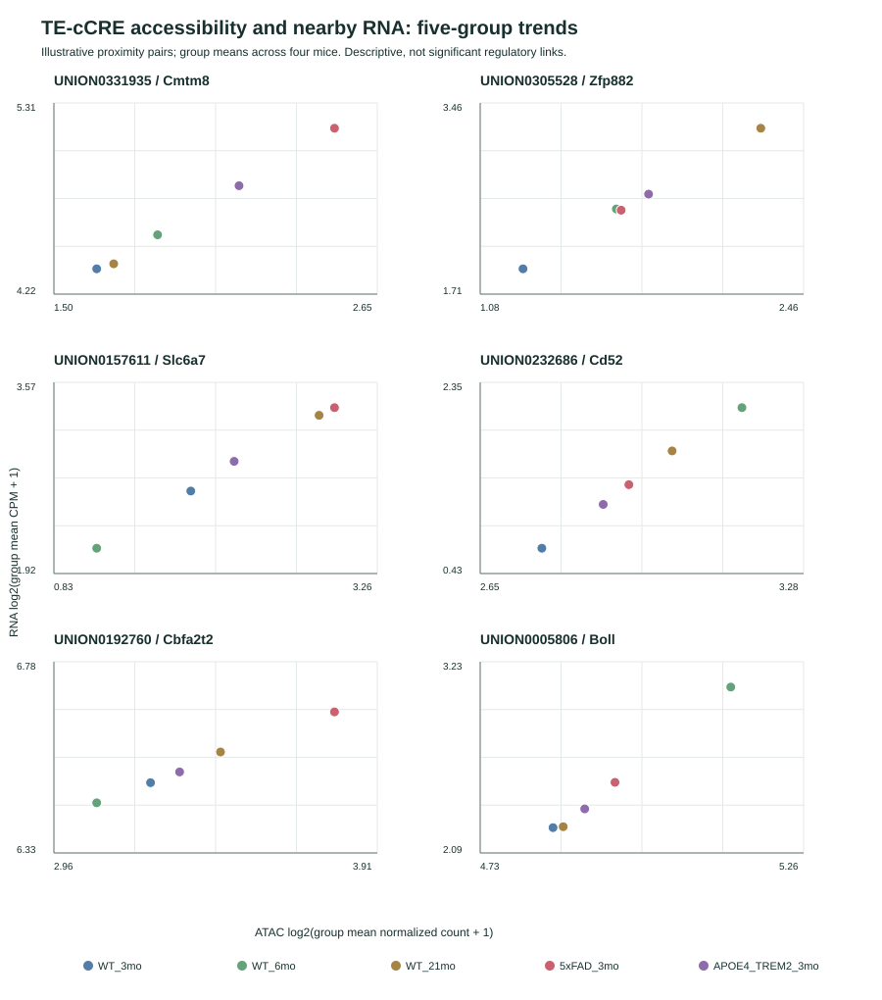
Complete all-peak and all-pair tables are retained in the local analysis directory and are not part of this web update.
TE ARCHITECTURE / NINE PANELS / 24 OCT 2026
Two source-labelled adaptations of the supplied A–I figure. The all-cell-type view uses the accepted initial ATAC calibration; the Microglia view uses 355,621 retained manual called peaks from 20 mice and the supplied mm10 TE BED. The figures report ATAC peak overlap and fragment accessibility, not TE RNA expression.
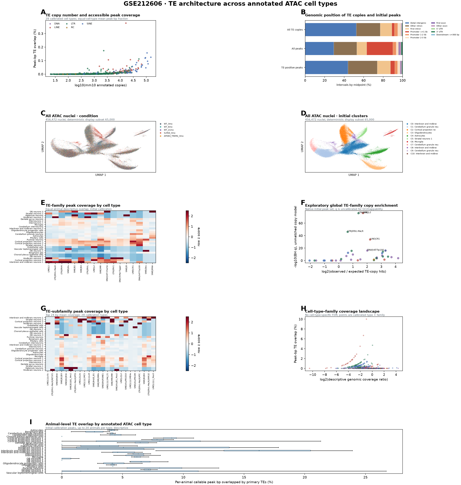
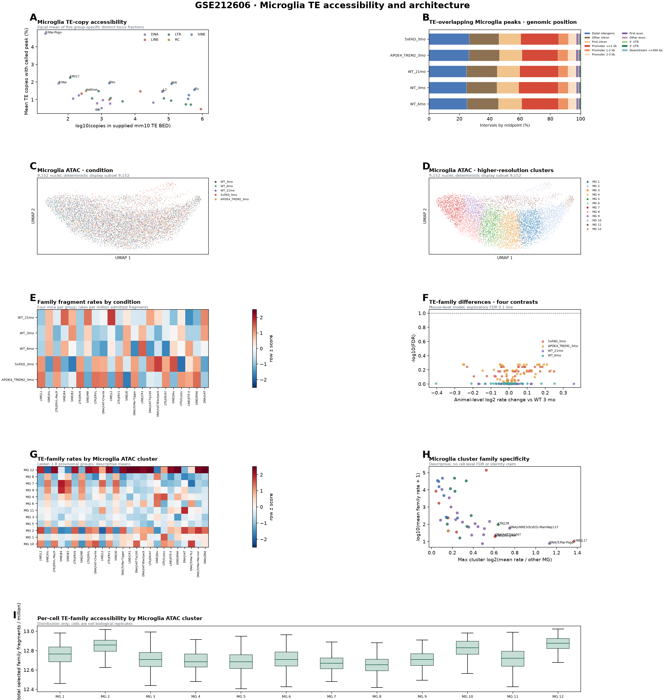
The Microglia family model has no FDR < 0.1 hit in these four contrasts. The all-cell-type copy-enrichment q values use an unmatched background and are explicitly exploratory. The two figure sets have different peak sources and units.
Panel-by-panel methods and limits · Plot data and source checksums
RNA + ATAC TE SUBFAMILIES / 20 MICE / 24 OCT 2026
Microglia mouse-level contrasts against WT 3 mo identify 241 RNA TE subfamilies and 585 ATAC TE subfamilies with positive estimated fold changes in both 5xFAD 3 mo and APOE4/TREM2 3 mo. The heatmap PDFs retain every such row and all 20 mouse columns; the previews show the first 35 ranked rows. None meets FDR 0.1 in either assay. Direction alone is not evidence of differential expression or accessibility.
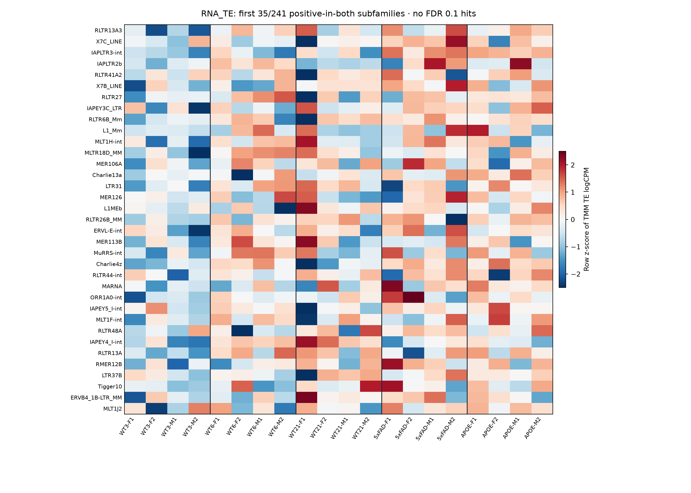
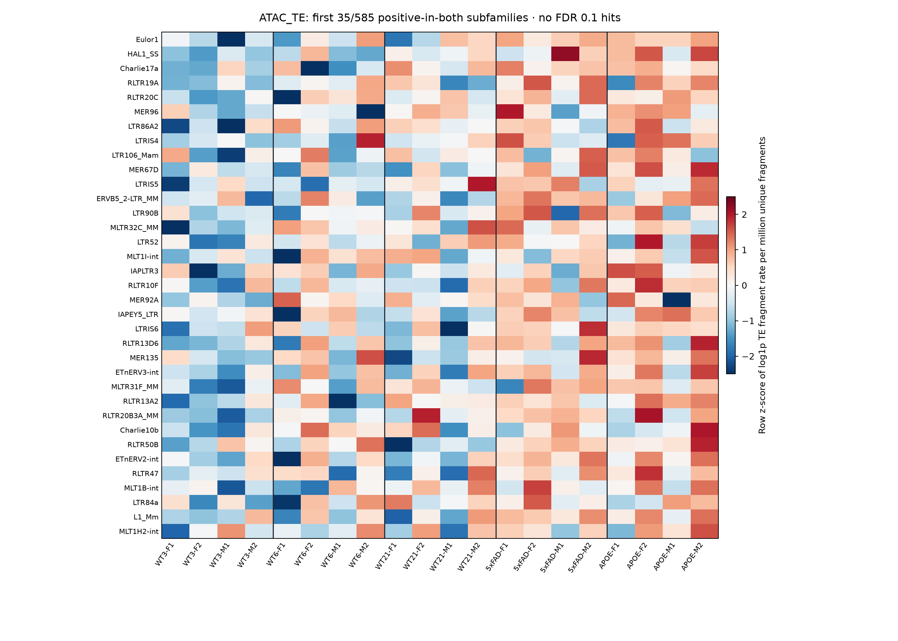
Each disease group has a higher mean than every WT group in mouse-level RNA expression and ATAC accessibility, and in the values displayed on both UMAP assays; see the five-group selection table. Some margins are small and none of these disease contrasts passes FDR 0.1. Each PDF crosses all five groups with whole-atlas RNA, whole-atlas ATAC, Microglia RNA and Microglia ATAC coordinates. Global backgrounds show all cell types; only Microglia with measured TE signal are colored. RNA and ATAC coordinates and color scales are separate. These names describe subfamilies, not identifiable individual TE insertions.
Open each full 20-panel PDF: RMER12B · RLTR45-int · MLT2B1 · IAPLTR3-int · MLT1J-int.
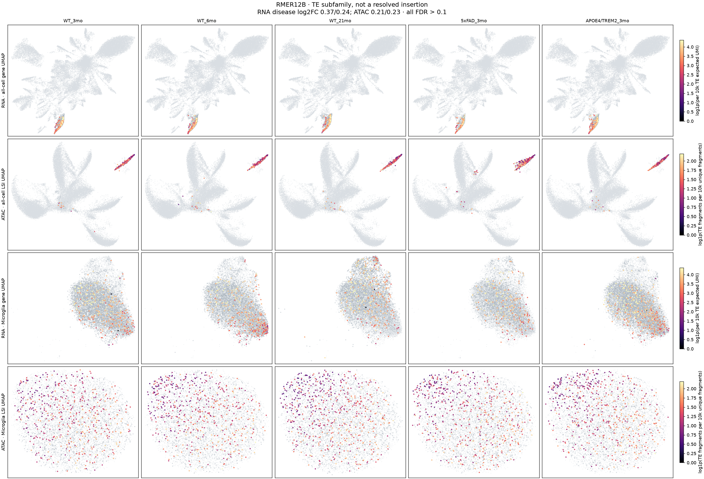
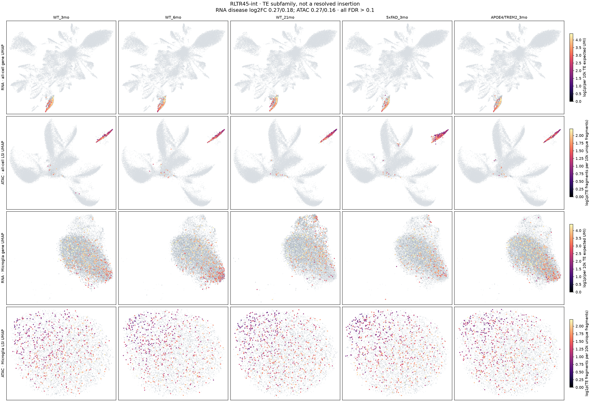
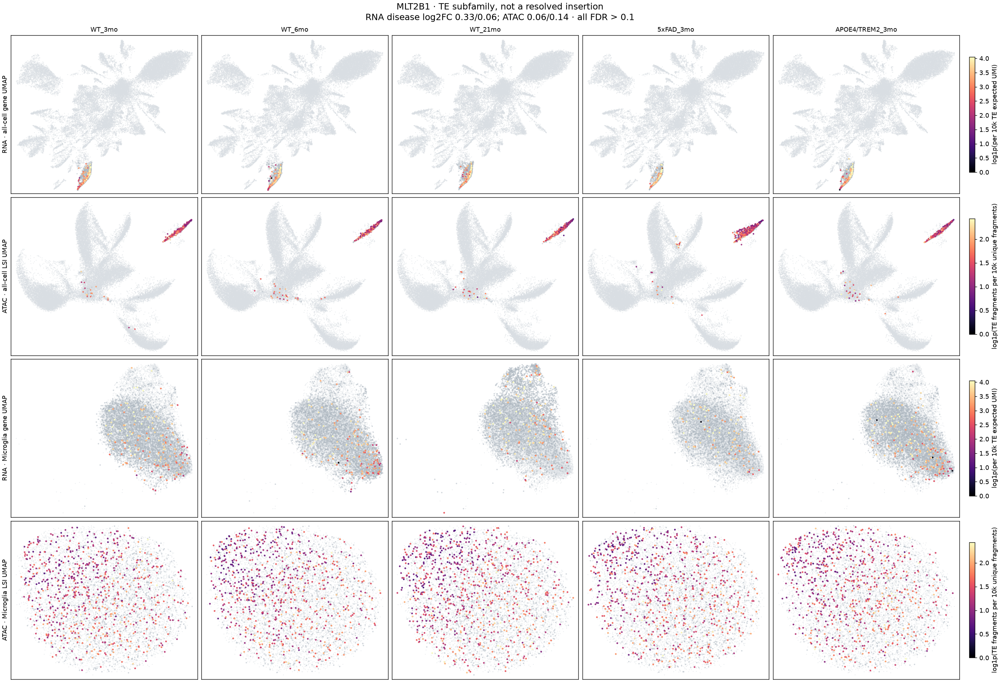
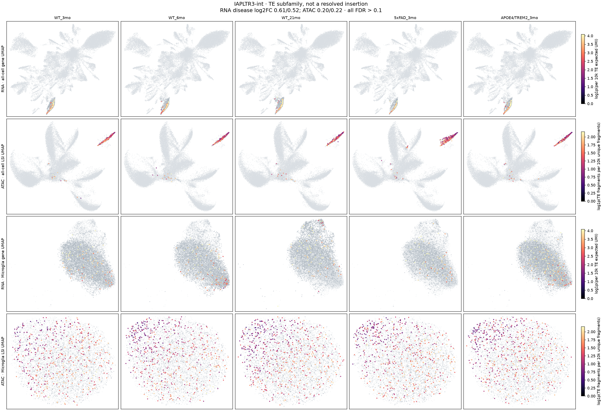
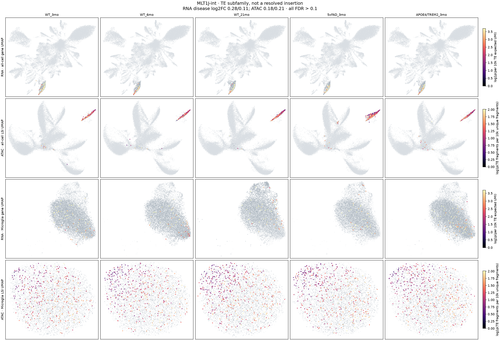
150 shared directional subfamilies · UMAP example group summaries · Methods and interpretation · Source and output checksums
MICROGLIA / FOUR TARGET GROUPS / MM10
This panel follows the supplied radial-tree layout. Its branches show the RepeatMasker class → family → subfamily hierarchy; branch lengths are not a sequence phylogeny or insertion dates. Orange arcs indicate the fraction of copies with <10% divergence from the subfamily consensus, and teal arcs indicate ≥20% divergence. The 3,651,522-copy mm10 source is summarized in the full TSV; the figure labels selected abundant subfamilies.
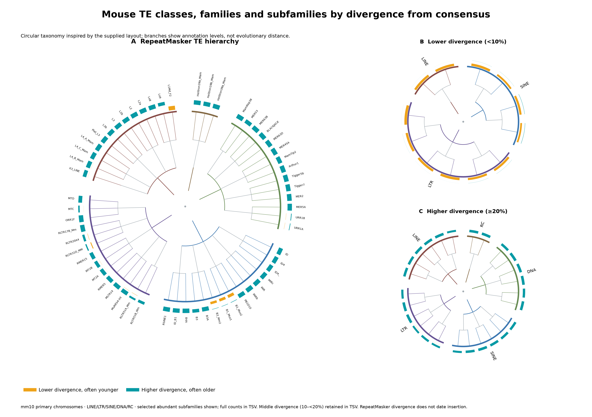
Four chromosome panels use the requested track order. Outer to inner: peak occupancy enrichment of lower-divergence (<10%) TE copies, higher-divergence (≥20%) TE copies, pooled Microglia ATAC bigWig signal, mouse-level Microglia RNA gene expression, and annotated gene density. Gold ticks indicate TE copies beneath a target-group peak but no overlapping WT 3-month called peak. The TE-age categories use RepeatMasker divergence as a relative proxy, not insertion dates. Five-megabase bins and full numerical values are downloadable.
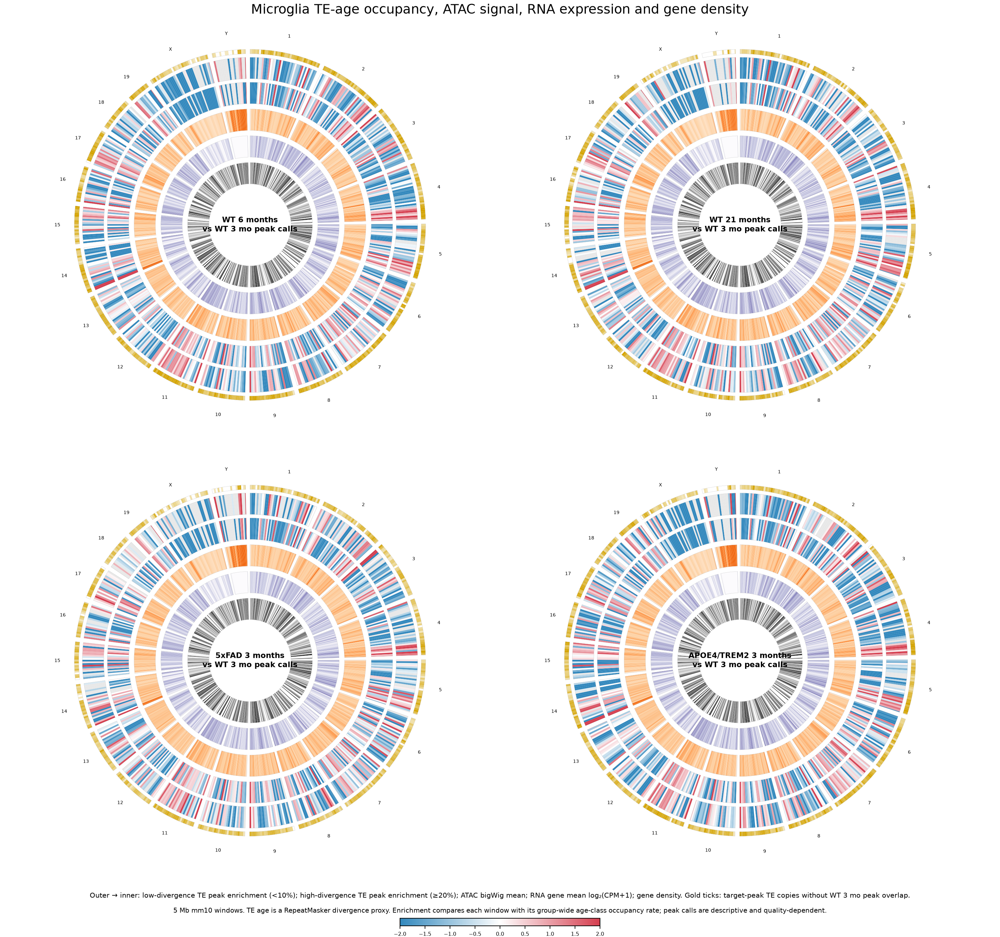
These are descriptive tracks. The TE colors compare each window with the same group's genome-wide age-bin peak-occupancy fraction. They are not disease-vs-control statistical significance. The RNA ring is chromosome-binned gene expression, not basewise RNA coverage.
TE age/peak bins TSV · TE copy and peak-call QC TSV · ATAC signal TSV · RNA expression and gene density TSV · Methods
Each BED has mm10 coordinates, RepeatMasker name/class, and the relative age bin. Peak-call absence in the control is sensitive to read depth and calling thresholds.
WT 6 mo BED · WT 21 mo BED · 5xFAD 3 mo BED · APOE4/TREM2 3 mo BED
The previous mouse-contrast and genomic-copy views remain available as separate descriptive analyses: RNA/ATAC effect plot, all-copy divergence plot, and earlier methods.
FOUR TARGETS VS WT 3 MONTHS · MM10 · MEASURED WINDOWS
These four Circos panels compare WT 6 months, WT 21 months, 5xFAD 3 months and APOE4/TREM2 3 months with WT 3 months. The outer band has separate chromosome blocks. All measured tracks are radial density curves: RepeatMasker TE intervals per 1 Mb (grey), target-group Microglia ATAC bigWig mean in 100 kb windows (red), and WT 3-month ATAC mean in the same windows (blue). Each assay uses a shared log1p scale across groups, clipped at the 99th percentile for display. The TE annotation covers 3,651,522 mm10 LINE, SINE, LTR, DNA and RC intervals. These are descriptive group signals, not differential-accessibility tests.
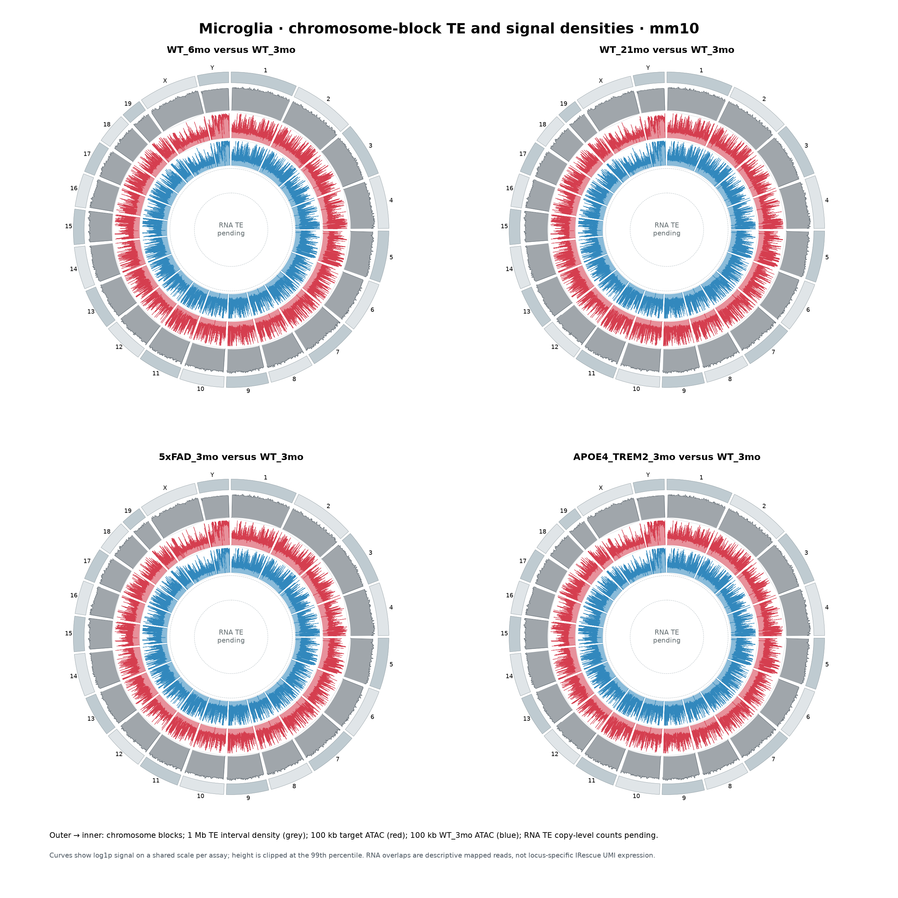
RNA TE track pending: existing IRescue results are subfamily expected UMI counts and cannot be placed at individual genomic TE copies. The Microglia-only copy-level RNA count job has not finished. The grey center marks missing data; it is not a zero signal.
Four-page linear genome tracks PDF · Earlier heatmap-ring Circos PDF · 1 Mb TE density TSV.gz · 100 kb ATAC group signals TSV.gz · Methods and RNA status
PUBLIC MM10 REFERENCE TRACKS / DESCRIPTIVE CROSS-STUDY COMPARISON
Our target-group TE copies with an ATAC peak and no overlapping WT 3-month called peak were intersected with published, processed mm10 tracks. The best-matched external references are four control hippocampal Microglia H3K9me3 ChIP-seq tracks and two control hippocampal Microglia whole-genome CpG methylation replicates, all from 3-week mice. These are different animals from our five ATAC groups. A missing called WT peak is not zero WT signal.
Across 8,398 5xFAD target-only TE copies with measured reference H3K9me3, the median was 1.099, compared with 1.063 across 20,429 WT 3-month peak-bearing copies. The locus-level Pearson correlation between ATAC log2(5xFAD/WT3) and reference H3K9me3 was 0.017. This comparison does not support lower reference H3K9me3 at the 5xFAD target-only set. Only 3,835 of 67,953 tested TE loci met the CpG coverage criterion in both public mice; methylation panels display that covered subset. These cross-study, unequal-locus-set comparisons cannot test loss of a mark within the same mice.
Additional views: TE-subfamily dotplots · H3K9me3 TE-midpoint profiles · Target-only TE-copy Circos. H3K9me2 comes from embryonic forebrain and H4K20me3 from embryonic stem cells; their H3K9me2 and H4K20me3 plots are context panels, not Microglia measurements.
Methods, source accessions and limits · Group-set summary TSV · H3K9me3 GEO · CpG GEO
MICROGLIA / CLUSTER-SELECTED MARKERS
Select one RNA cluster and one ATAC cluster. The plots rank 19 source-measured Microglia candidate markers by the selected cluster's mean relative to the other clusters in that assay; six other-lineage QC genes remain in the full dotplots above. Dot area shows the detected-cell fraction; color shows the marker mean scaled across clusters. This ranking is descriptive and is limited to the measured panel. RNA expression and ATAC gene activity have separate scales.
PUBLISHED MARKER CONTROL / TRACKERSCI GSE212251
The RNA dotplot follows the paper’s 16 cell types × 16 markers; the ATAC heatmap follows its 14 cell types × 14 markers. Both retain the published row and gene sequence. The plots use deposited TrackerSci RNA counts (14,095 cells) and ATAC gene activity (9,316 cells). Dot size is the detected-cell fraction; RNA color is the gene-wise scaled mean count after cell-library normalization. ATAC color is the gene-wise scaled mean activity.
Study distinction: TrackerSci GSE212251 is a different cohort from this atlas’s EasySci GSE212606 aging/Alzheimer data. Their cell counts, clusters and UMAP layouts cannot be identical. The published Figure 1B has separate RNA and ATAC UMAPs; the available GEO coordinates describe an integrated embedding, so that panel is not presented here as an exact reproduction. The original authors’ plotting object/settings were not deposited, so marker axes and source-data patterns are reproduced, but pixel-identical colors and dot sizes are not claimed.
Loading the published-order marker values…
Original fixed-color PDF · Download 452 plotted values (TSV) · TrackerSci paper · Source GEO
PUBLISHED FIGURE 3 / TRACKERSCI GSE212251
The independent figure follows the paper's A–G sequence and 13 major cell-type order. Its data-backed heatmaps use 1,744 DE genes with a concordant DA promoter peak. The reported linkage table has 2,832 promoter and 15,485 distal links; the TF table has 51 positive and 19 negative reported correlations. Dlx2 and Olig2 maps use the deposited RNA/ATAC count matrices and integrated UMAP coordinates.
How to read the differences: B and E display only the reported significant rows because the complete tested and permuted score vectors were not deposited. F and G compare RNA expression with ATAC gene activity, not motif accessibility; they are marked as adaptations. This source is newborn-cell TrackerSci GSE212251 on mm39, whereas our aging/Alzheimer atlas is GSE212606 on mm10. These are distinct cohorts.
Methods and panel-by-panel limits · 1,744 matched gene–promoter pairs · TF gene-activity proxy correlations · Original unmodified Figure 3 · GEO source
OUR DATA / MICROGLIA ONLY / GSE212606
This separate A–G adaptation uses our 22,251 selected Microglia RNA cells, 9,152 Microglia ATAC cells and 20 matched mice. A shows marker RNA and promoter accessibility; B–C summarize the tested TE-overlapping peak–gene links; D shows higher-resolution Microglia UMAPs and a mouse-level example; E–G compare transcription-factor RNA with promoter ATAC counts.
Interpretation: RNA and ATAC were measured in different nuclei, so cross-assay correlations use mice. None of the 120,334 tested TE peak–gene links passed FDR 0.1. E–G are promoter-accessibility proxies, not motif-usage measurements; D colors cells by cluster means, not measured per-cell TE-locus accessibility. Cluster identities remain provisional.
Methods and limits · 20-mouse RNA and promoter ATAC values · Marker correlations · B data · C data · E–G data · E permutation data · Provenance
MICROGLIA RNA / 20 MICE / FOUR CONTRASTS
Raw RNA UMI counts from 22,251 provisional Microglia-like cells were summed by mouse. A sex-adjusted edgeR robust quasi-likelihood model compares each target with WT_3mo. All 20 mice are biological replicates; subcluster tests require adequate mouse support. At FDR 0.1, whole-Microglia results contain 332 WT_21mo and 9 APOE4_TREM2_3mo DEGs, and none for WT_6mo or 5xFAD_3mo. The 24 higher-resolution cluster labels remain provisional.
Nearby TE-overlapping ATAC peaks are candidate genomic associations based on distance and group accessibility. They do not establish regulation or individual TE-copy transcription. No disease RNA TE subfamily reaches FDR 0.1 in the separate IRescue analysis. The exact original publication-control plots remain in the section above.
Loading DEG data…
A dash marks a contrast without enough mouse support or testable genes.
| Gene | TE | Peak | TSS bp | ATAC Δ log₂ | Gene FDR | TE RNA FDR |
|---|
MICROGLIA GENE RNA / 20 MICE / 26 OCTOBER 2026
Raw integer gene UMI counts from 22,251 selected Microglia cells were summed by mouse. Four target groups were each compared with WT_3mo using 4 mice per group and a sex-adjusted ~ condition + sex design. These are gene DEGs. The separate IRescue TE-subfamily expected counts contain fractional allocations and retain their existing edgeR analysis in RNA TE differences.
| Contrast | Genes with p value | FDR < 0.05 | FDR < 0.10 | Figures |
|---|---|---|---|---|
| WT_6mo vs WT_3mo | 9,385 | 0 | 0 | Volcano PDF · pheatmap PDF |
| WT_21mo vs WT_3mo | 9,385 | 210 | 273 | Volcano PDF · pheatmap PDF |
| 5xFAD_3mo vs WT_3mo | 9,385 | 1 | 1 | Volcano PDF · pheatmap PDF |
| APOE4_TREM2_3mo vs WT_3mo | 9,385 | 4 | 26 | Volcano PDF · pheatmap PDF |
The volcano plots show mouse-level gene effects and Wald p values. Each pheatmap shows up to 60 genes with FDR < 0.1 in that contrast, row-scaled across the eight mice in its two groups. A panel states explicitly when no genes pass that threshold. RNA and ATAC are separate assays; these gene results do not establish TE-copy regulation.
Mouse QC PCA · Mouse counts and size factors · Methods and limits · Source and model provenance